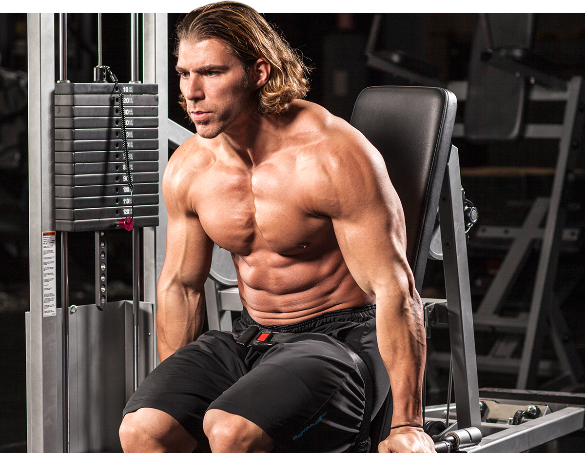
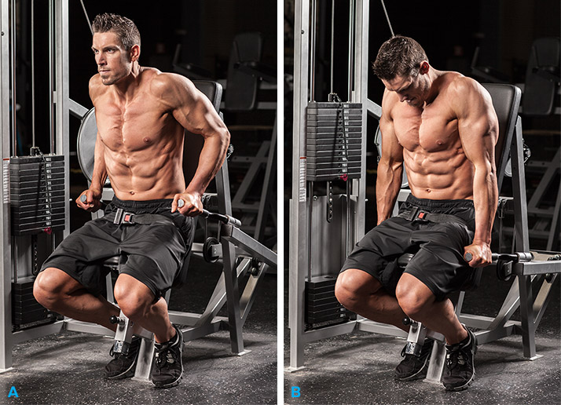
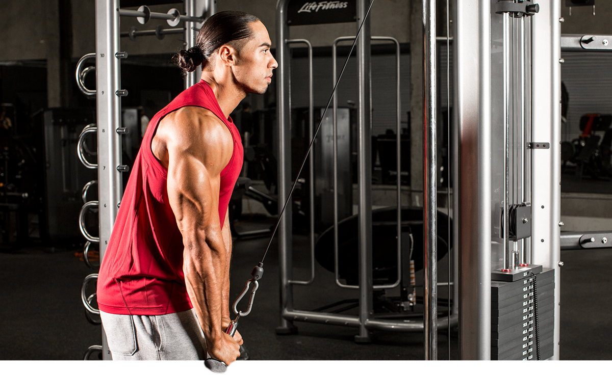
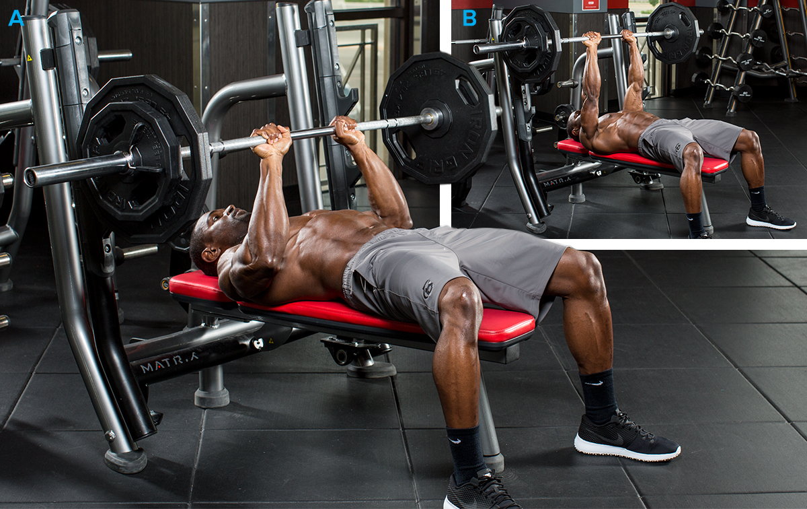
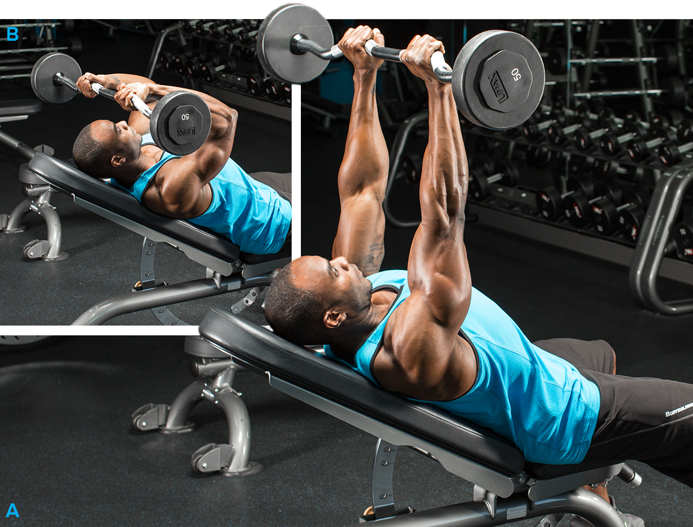

1: Overall Triceps MassDon't even think about looking toward the cable press-down station. As I've often said, multijoint exercises in which more than a single set of joints are at work allow you to use greater loads. With triceps, it's a pretty short list, including dips (machine dips, bench dips, weighted parallel-bar dips) and close-grip bench presses. With the latter, if balance is too difficult, try it on the Smith machine . |
 |
2: Greater Triceps DefinitionSimply doing light weights for high reps to build better arm definition is no longer considered the best approach. This workout starts with a straight-sets multijoint exercise for an initial size and strength stimulus, then picks up the pace by employing supersets with a high volume of work. You'll be moving faster and really feeling the muscle burn. |
 |
3: Starting OutBeginners are encouraged to try different movements, to get a feel for the exercises and ensure they're working all three triceps heads. I recommend starting with machines to rehearse the basic motions before graduating to free weights. Just make sure you adjust the machine for your body's dimensions. |
 |
4: Emphasis On Lateral HeadThe largest head of the three, the lateral is also the one away from your midline, so that makes it the outermost on your arm. Focusing on the lateral head is a great way to bring variety to your workout or target it if it's particularly lagging |
 |
5: Emphasis On Long HeadOn the opposite side of the horseshoe, just above the medial head, is the bulky long head. As stated earlier, because of how it attaches above the shoulder joint, you need to put your arms in the overhead position to best engage it. |
 |